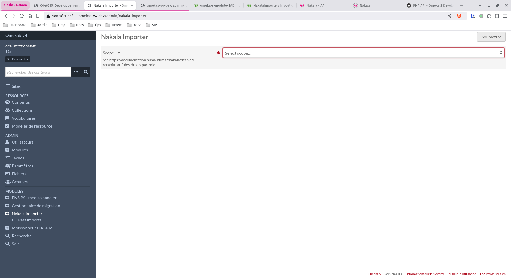
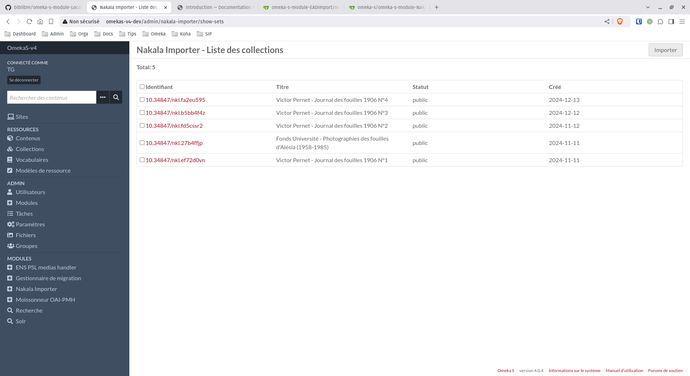

Tutoriels
Configuration d’un nouvel import
Tout d’abord, avant de configurer votre import, vous devez choisir un “scope” (rôle) relatif aux droits Nakala.
Un premier appel API est lancé afin de lister les collections Nakala et vous donner la possibilité de les importer en les cochant.
